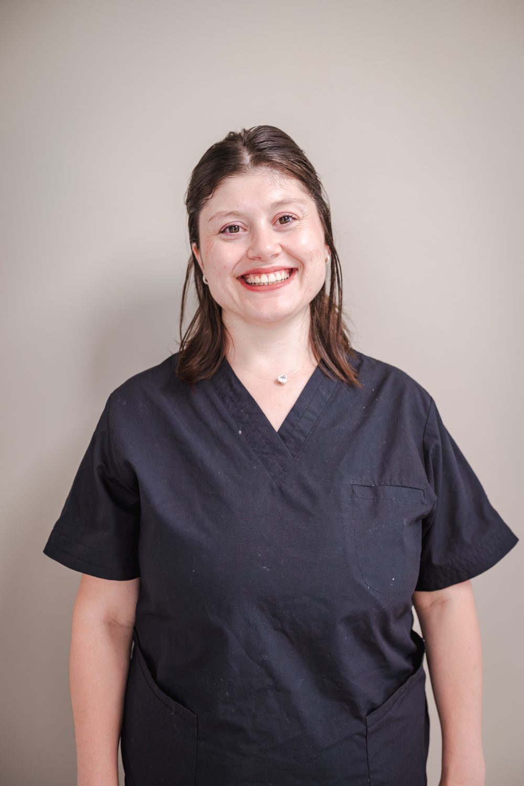

Cuando llega el diagnóstico, el mapa se borra.
Soy enfermera oncológica y te ayudo a entender lo que dijo el equipo, a ordenar las dudas y a saber qué hacer en casa. Empecemos por donde estás.
¿En qué momento del camino estás?
Elegí la opción que más se parece a tu situación y te cuento por dónde empezar.
Tu momento: Recibí un diagnóstico
Recibiste un diagnóstico y saliste de la consulta con la cabeza llena.
Es normal sentir que todo pasa muy rápido. El primer paso es ordenar: qué te dijeron, qué estudios faltan, cuál es el plan y quién es tu contacto en el centro.
Mientras tanto: descargá la ficha de preguntas (PDF)Para este momento
Una orientación para ordenar lo que te dijeron
- Entender tu diagnóstico y tu plan con palabras simples.
- Ordenar estudios, tiempos y próximos pasos.
- Armar las preguntas para tu oncólogo/a.
Trabajo junto a tu equipo tratante, no lo reemplazo.
Tu momento: Tengo un turno cerca
Tenés un turno cerca y no sabés qué preguntar.
Llegar con tus preguntas anotadas cambia la consulta: aprovechás mejor el tiempo y no te quedás con dudas al salir.
Mientras tanto: descargá la ficha de preguntas (PDF)Para este momento
Una orientación para preparar tu consulta
- Armar tus preguntas según tu caso y tu tratamiento.
- Saber qué llevar al turno: estudios, medicación, anotaciones.
- Entender después lo que te respondieron.
Trabajo junto a tu equipo tratante, no lo reemplazo.
Tu momento: Estoy en tratamiento
Estás en tratamiento y entre visitas quedan dudas sobre síntomas, medicación oral o cuidados en casa.
Algunas dudas pueden esperar al próximo turno y otras no. Repasá las señales de alerta y, para todo lo demás, lo vemos juntas.
Ver señales de alertaPara este momento
Una orientación para tus dudas entre turnos
- Entender los efectos secundarios y cómo cuidarte en casa.
- Distinguir qué puede esperar al turno y qué no.
- Organizar turnos, estudios y medicación.
Trabajo junto a tu equipo tratante, no lo reemplazo.
Tu momento: Acompaño a alguien
Acompañás a tu mamá, a tu pareja, a tu papá o a alguien que querés, y necesitás entender qué está pasando.
Muchas veces quien hace las preguntas es quien acompaña. Y acompañar también cansa. Podés pedir la orientación vos, con el consentimiento de quien está en tratamiento, para entender el plan y saber cómo ayudar.
Ver la red de apoyo en Río CuartoPara este momento
Una orientación para vos, que acompañás
- Entender el plan de tratamiento para poder ayudar.
- Saber qué cuidados hacer en casa y cuándo consultar.
- Un espacio también para tus dudas y tu cansancio.
Trabajo junto a tu equipo tratante, no lo reemplazo.

Lic. Natalia MansillaEnfermera desde 2013 · En oncología desde 2017¿Ya sabés lo que necesitás? Escribime por WhatsApp
Saliste de la consulta y el mapa sigue en blanco.
Te dieron mucha información en poco tiempo.
Algunas palabras no las entendiste. Otras ya no te acordás.
No sabés a quién preguntarle, y te da cosa molestar.
Y el sistema, encima, es un laberinto.
No tenés que armar ese mapa a solas.
Qué ganás con una orientación
Una videollamada de 50 a 60 minutos, uno a uno y sobre tu caso, pensada para que salgas con más claridad de la que entraste.
Entendés lo que te dijeron.
Traducimos a lenguaje claro informes, indicaciones y próximos pasos.
Llegás a la próxima consulta con tus preguntas.
Salís con una lista para llevarle a tu oncólogo/a.
Sabés qué hacer en casa.
Cuidados, signos de alarma y cuándo ir a la guardia. Y te queda todo por escrito.
Este espacio no es una consulta médica ni una segunda opinión oncológica.
Lo que dicen quienes me conocen
De las mejores personas que conocí en este proceso. Gracias por tu apoyo humano y profesional.
La mejor enfermera lejos: empática, paciente, alegre, excelente profesional.
Si algún día tengo que volver a esos sillones, que sea de tu mano.
La persona con más empatía que conocí, se nota que ama lo que hace.
Quién soy
Lic. Natalia Mansilla
Enfermería oncológica
Trabajo como enfermera desde diciembre de 2013 y me recibí en febrero de 2015. De agosto de 2017 a diciembre de 2018 trabajé en un servicio de oncohematología, donde aprendí de trasplante de médula ósea y hospital de día. Después pasé por otros servicios y, en octubre de 2020, entré al hospital de día oncológico de CIMA, donde trabajo hoy. Doy clases desde 2021; en 2026, en la Universidad Nacional de Río Cuarto.
Oncobrújula es para que no tengas que armar ese mapa a solas. Te escucho, ordenamos lo que quedó colgado y armamos las preguntas para tu equipo. Con calma.
Formación
- Formada en Enfermería oncológica de adultos — Instituto Nacional del Cáncer (INC)
- Formada en Cuidados paliativos para enfermería — Instituto Nacional del Cáncer (INC)
- Formada en Enfermería para oncología pediátrica — Instituto Nacional del Cáncer (INC)
- Formada en Educación al paciente y su familia — Hospital Privado Universitario de Córdoba
- Formada en Susceptibilidad y fragilidad de la piel oncológica — Asociación Argentina de Dermatología, Área Cosmetología
- Formada en Estética oncológica — Omnia Professional Learning
Socia de
- SLEO — Sociedad Latinoamericana de Enfermería Oncológica
- SAEOH
- SEOA
Empezar es simple
- 1
Me escribís.
Por WhatsApp o Instagram, en pocas líneas: en qué momento del camino estás.
- 2
Coordinamos.
Te confirmo día y horario. El valor de lanzamiento es $35.000. Reservar no te compromete a nada más.
- 3
Nos vemos por videollamada.
50 a 60 minutos. Después te mando el resumen escrito y, si hace falta, una ficha.
Precio de lanzamiento
$50.000 $35.000
Válido para las primeras 5 orientaciones o hasta el 30 de noviembre.
Incluye: videollamada de 50 a 60 minutos + resumen escrito + ficha si hace falta.
Reservar mi lugarSeñales de alerta
Ante cualquiera de estas señales, no esperés al próximo turno:
- Fiebre de 37,8 °C o más que se mantiene durante una hora.
- Moretones o sangrados sin haberte golpeado.
- Vómitos o diarrea intensos que no se cortan.
- Falta de aire.
En esos casos andá a la guardia o llamá al servicio de emergencias.
Preguntas frecuentes
No. La orientación es informativa y de acompañamiento, y trabajo junto a tu equipo tratante. El objetivo es que llegues a la consulta con tus dudas en orden.
No. Podemos ordenar opciones y preguntas para que vos decidas con tu médico/a, respetando tus valores.
Sí. Justamente ahí suele haber más niebla: estudios, tiempos, segunda opinión, qué llevar al primer turno.
Porque cada tratamiento y cada forma de vivirlo es única. Lo que circula en redes, incluso lo que comparto yo, es información general. En la orientación miramos tu caso: tu plan, tus dudas y lo que necesitás en casa.
No. Si hay fiebre de 37,8 °C o más que se mantiene durante una hora, moretones o sangrados sin golpe, vómitos o diarrea intensos que no se cortan, o falta de aire, andá a la guardia o llamá al servicio de emergencias.
No. Son referentes para orientar. Cada uno atiende por su cuenta; yo no tomo esos turnos ni cobro por esa derivación.
La persona en tratamiento o un familiar, con el consentimiento de quien está transitando el proceso. Muchas veces quien escribe es un familiar. Si acompañás a alguien, este espacio también es para vos.
En Recursos: profesionales de confianza en Río Cuarto y guías para descargar.
Agendá una orientación personalizada
Una videollamada para entender lo que dijo el equipo, ordenar las dudas y saber qué hacer en casa.